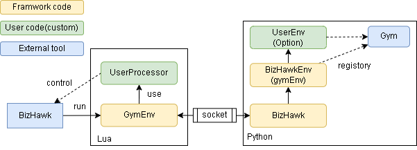

Make Original Environment
luaやpythonを実装することで動きをカスタムすることができます。 概要は以下です。
必須はLua側のUserProcessorでBizHawkの操作を記載します。 Python側のUserEnvはオプションでGymに渡す直前にコードを書きたい場合に記載します。
UserProcessor(Lua)
BizHawkへの操作を記載します。 テンプレートは以下です。
-- gymbizhawk/bizhawk.lua へのパスをこのファイルからの相対パスで指定しロードします
package.path = package.path .. ';../../gymbizhawk/bizhawk.lua'
local bizhawk = require('bizhawk')
local EnvProcessor = {}
EnvProcessor.new = function()
local this = {}
-- abstract property
this.NAME = "任意の名前"
this.ROM = "ROM path"
this.HASH = "" -- ROMのHASH値(省略可能)
this.ACTION = { "bool" } -- action types
this.OBSERVATION = "int" -- observation type
-- abstract function
-- 最初に呼ばれます
this.setup = function(self, env, setup_str)
self.env = env
end
-- abstract function
-- episodeの最初に呼ばれます
this.reset = function(self)
end
-- abstract function
-- actionを元に1step進めます
-- 戻り値は報酬と終了したかどうかを返します
this.step = function(self, action)
local reward = 0
local done = True
return reward, done
end
-- 状態を配列で返します。画像を使う場合は使われません。
this.getObservation = function(self)
local d = {}
return d
end
return this
end
---- GymEnvの実行を書きます。log名は任意です。
local env = bizhawk.GymEnv.new("_custom.log")
env:run(EnvProcessor.new())
ActionTypes / ObservationType
this.ACTION と this.OBSERVATION は以下のtypeを指定します。
lua str |
sample |
gym |
bool |
bool |
Discrete(2) |
int |
int |
Box(low=-np.inf, high=-np.inf, shape=(1,), dtype=np.int64) |
int [low] [high] |
int 0 255 |
Box(low, high, shape=(1,), dtype=np.int64) |
float |
float |
Box(low=-np.inf, high=-np.inf, shape=(1,), dtype=np.float32) |
float [low] [high] |
float 0.0 1.0 |
Box(low, high, shape=(1,), dtype=np.float32) |
ACTIONは配列形式で指定します。
this.ACTION = {
"int 1 8",
"int 1 16",
"bool",
"bool",
}
gym側へはこの配列を gym.spaces.Tuple 形式で渡します。
OBSERVATIONは1つだけ指定でき、全ての値でこのtypeが適用されます。
this.OBSERVATION = "int"
UserEnv(Python)
BizHawkEnvとGymとの間の処理を記載できます。 テンプレートは以下です。
import os
import gymnasium.envs.registration
import gymnasium.spaces as spaces
import numpy as np
from gymbizhawk.bizhawk import BizHawkEnv
# 再定義した環境の登録です
gymnasium.envs.registration.register(
id="DrMario-v0",
entry_point=__name__ + ":DrMarioEnv",
nondeterministic=True,
)
# BizHawkEnvをラップします
class DrMarioEnv(BizHawkEnv):
def __init__(self, **kwargs):
super().__init__(**kwargs)
# action_spaceとobservation_spaceを任意に指定
self.action_space = self.bizhawk.action_space
self.observation_space = self.bizhawk.observation_space
def reset(self):
state, info = super().reset()
# 任意の処理
return state, info
def step(self, action: list):
state, reward, terminated, truncated, info = super().step(action)
# 任意の処理
return state, reward, terminated, truncated, info
具体的な実装例は examples 配下を参考にしてください。